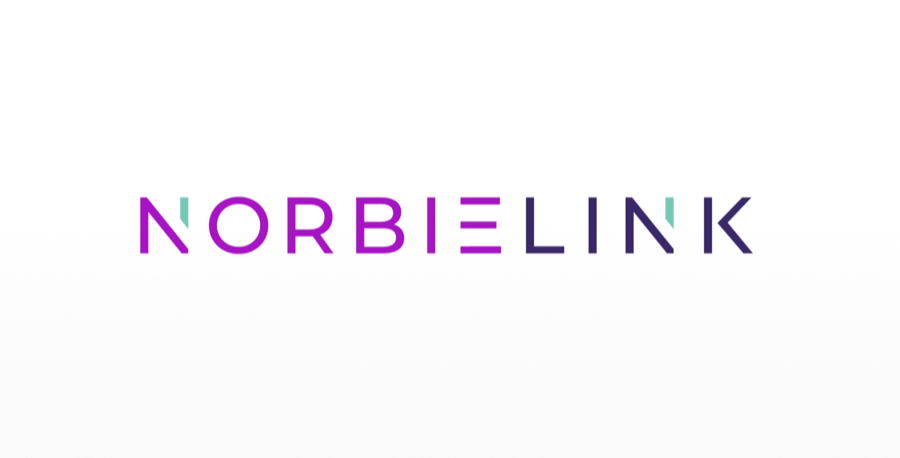
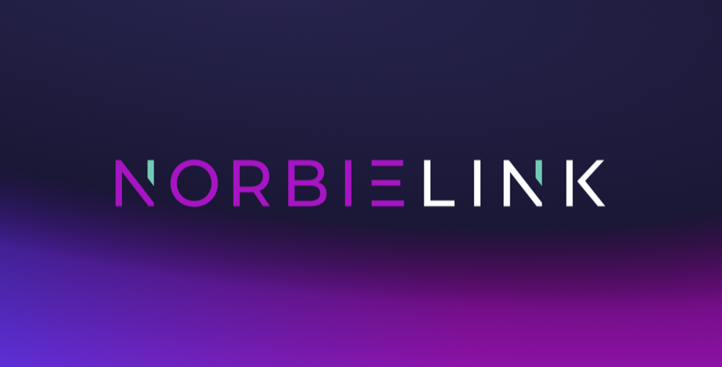
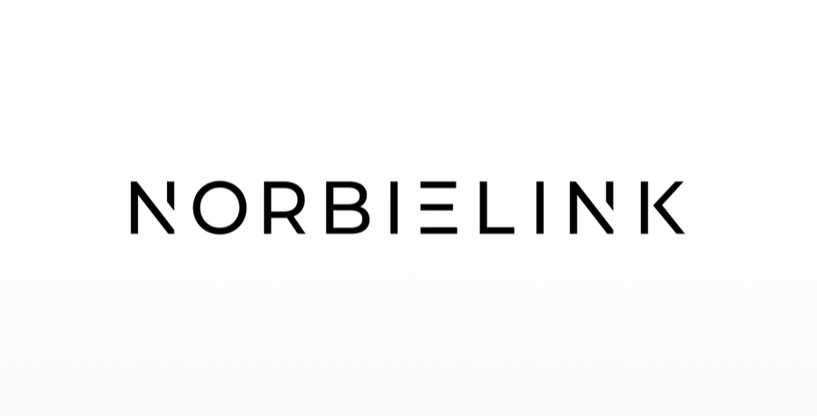
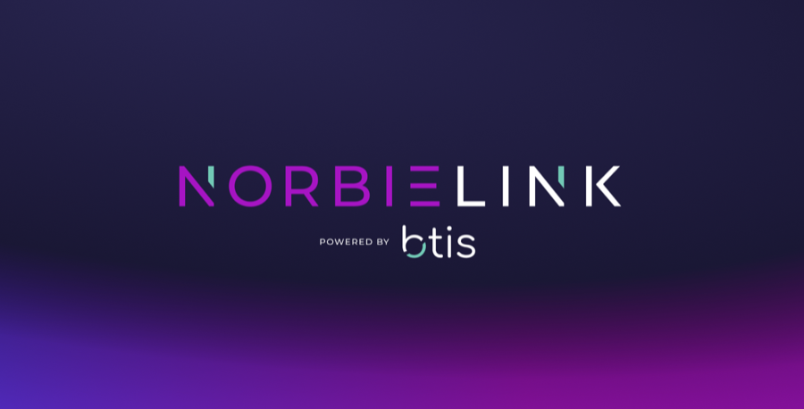
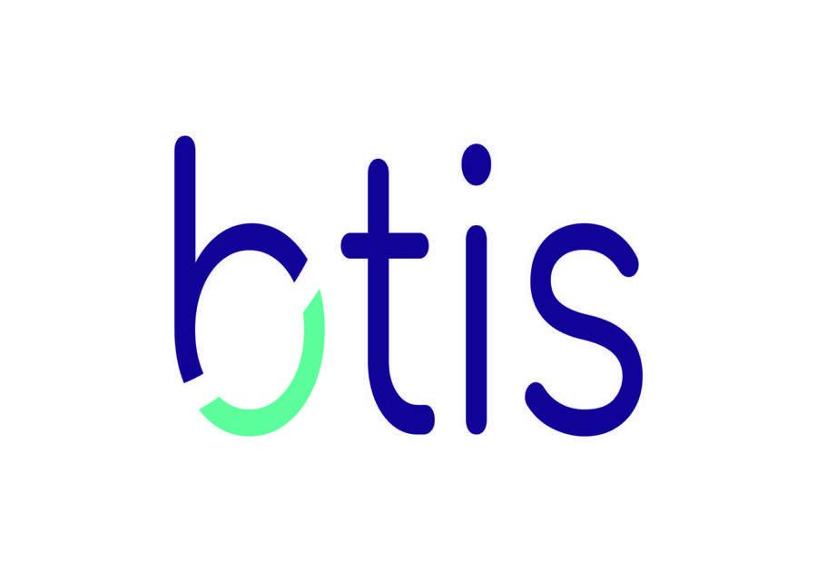
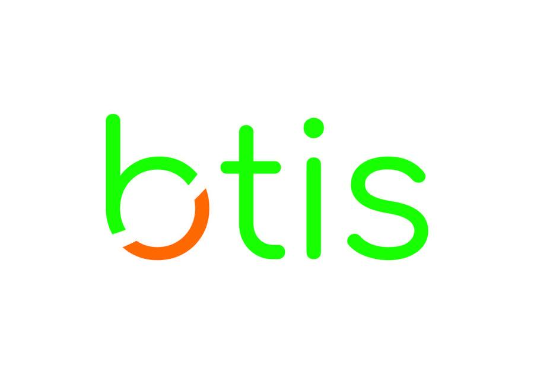
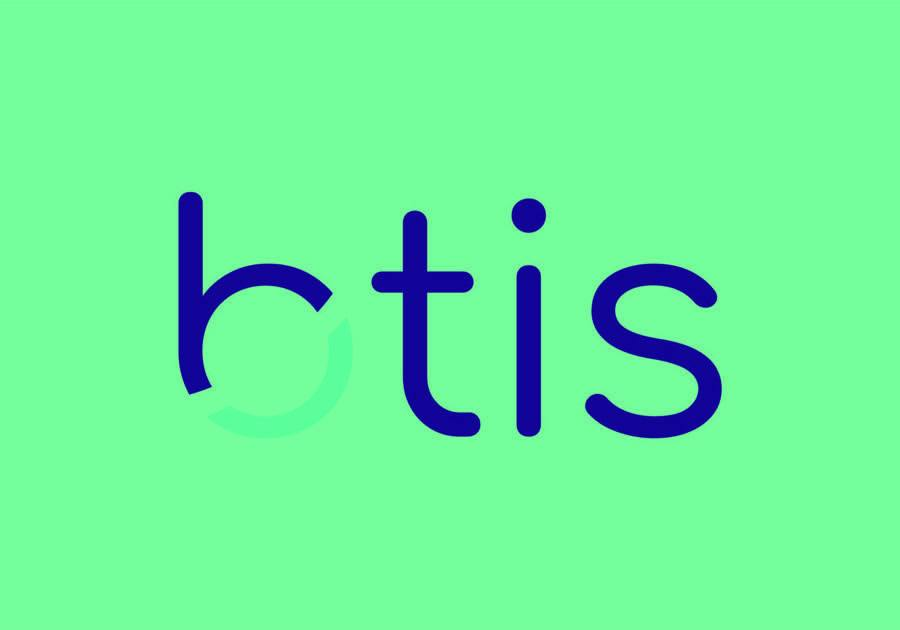
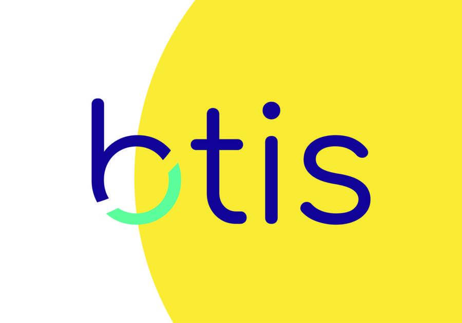

By default, the lockup and icon inherit their colors from the parent element, however, this can lead to incorrect color combinations. Moving forward, all usages should choose between the brand-approved appearances below.
Brand
Brand app logos are used in situations that demand a bold brand presence against a neutral background.
Here are our do's, and also the BTIS logo exists mainly in the two-color version.

DoThe primary color logo is preferred over all others.

DoIf necessary, it can be represented on our purple background with white letters

DoFor strictly black and white situations, the entire logo will contrast with the black or white background.
DoFor strictly black and white situations, the entire logo will contrast with the black or white background.DoWhen specifically referencing the Marketplace or its features, the full BTIS Marketplace logo may be used.

DoWhen specifically referencing the Marketplace or its features, the full BTIS Marketplace logo may be used.DoThe “b” mark can be used situationally as a background element or in social media.DoThe “b” mark can be used situationally as a background element or in social media.
Don'ts
Ouch.... These are some painful examples of unacceptable uses of the BTIS logo.
Don’tStretching or squeezing. Never deform the logo.

Don’tStretching or squeezing. Never deform the logo.Don’tMoving elements. Don’t rearrange the elements of the logo.

Don’tChanging colors. Do not alter the colors of the logo.

Don’tObscuring. Never place the logo on a background that makes the logo blend in or disappear.Don’tObscuring. Never place the logo on a background that makes the logo blend in or disappear.

Don’tCrowding. Always leave the prescribed space around the logo, away from other elements.Don’tVisual effects. Do not add effects like drop-shadows, strokes, embossing etc. to the logo.